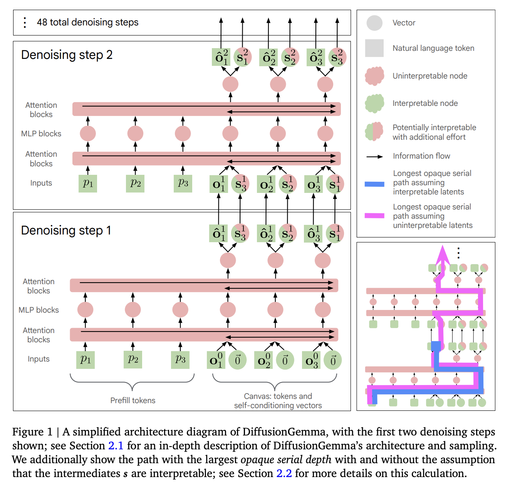
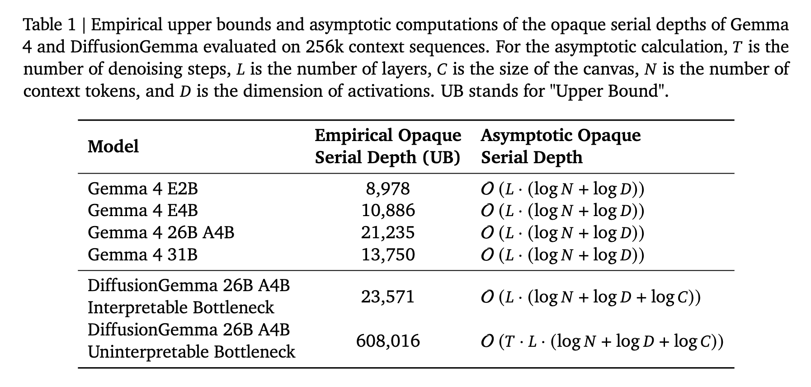
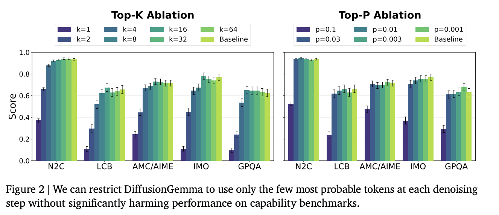
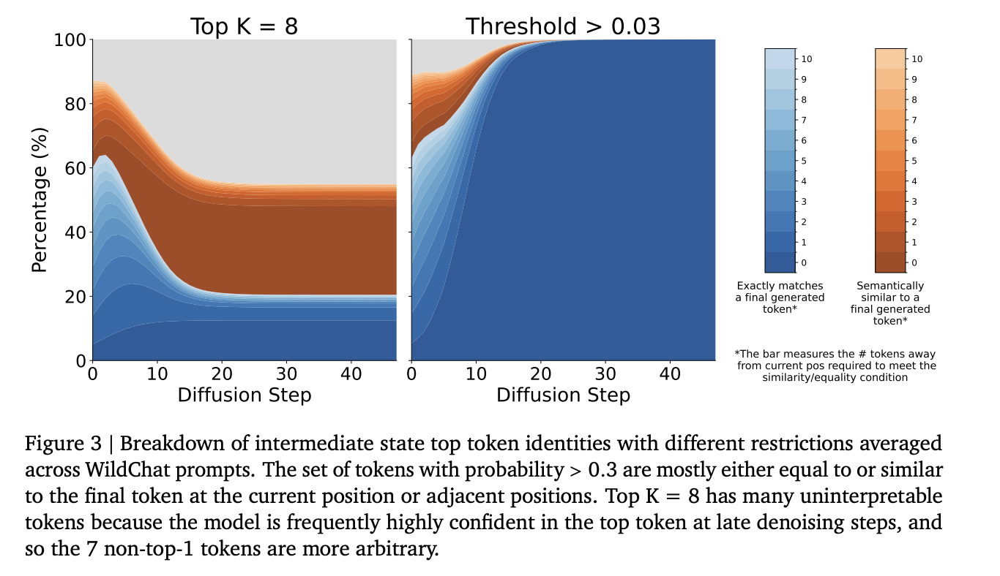
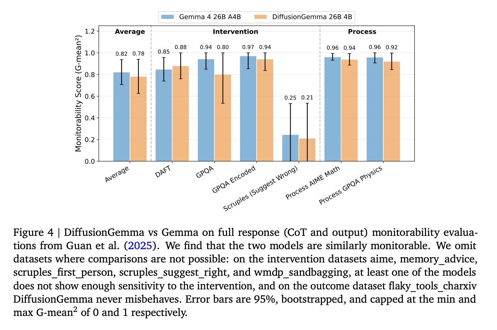
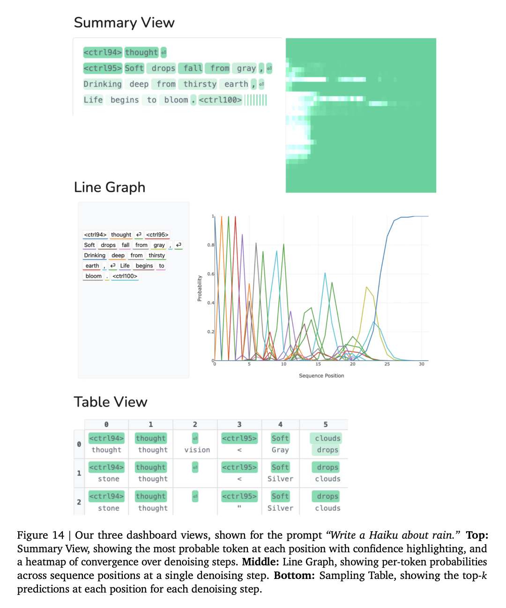
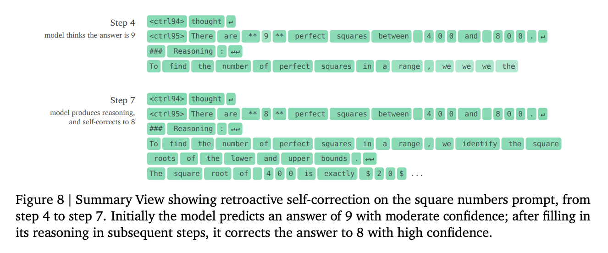
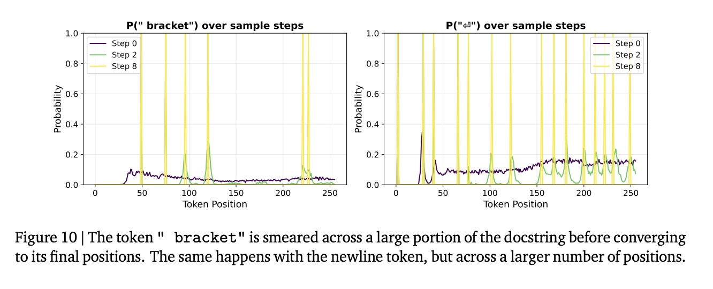

New research from a collaboration between the GDM interpretability team and the GDM text diffusion team. Read the full paper on arxiv.
Overview
In a recent collaboration between the GDM interpretability team and the GDM text diffusion team, we performed a transparency audit of DiffusionGemma, GDM's new text diffusion model.
Overall, we find that DiffusionGemma is not significantly less transparent than Gemma.
- Gemma and DiffusionGemma perform similarly on monitorability evaluations.
- Although naively DiffusionGemma has a much larger opaque serial depth, we can apply the logit lens to intermediate vectors and ablate non-interpretable information without harming performance. This implies that these intermediate nodes are interpretable, which reduces the opaque serial depth to be similar to that of Gemma.
However, even though the variables that the model uses at different steps are interpretable, this does not necessarily mean that we understand the algorithm that the model uses to reach the final answer. We thus distinguish between variable transparency, which we define as whether we can understand snapshots of the model's computation, and algorithmic transparency, which we define as whether we can use these snapshots to reconstruct the process by which the model arrived at its outputs.
By default, algorithmic transparency is much lower for a text diffusion model. In an autoregressive model, the model proceeds through its reasoning in order, token by token; when each token is generated, we know the exact state the model was in, and can make inferences about why it generated a certain token. On the other hand, in a single "canvas" a diffusion model generates all tokens at once, and the causal relationship between different tokens is unclear; a diffusion model can e.g. use tokens at the end of the canvas to help it figure out what tokens to generate earlier in the canvas. In a series of case studies, we study these and other phenomena that are unique to text diffusion models, including non-chronological reasoning, token and sequence smearing, and intermediate-context reasoning. We make progress on algorithmic transparency and believe we now understand some of the algorithmic "styles" that DiffusionGemma uses, but we still think that it is less algorithmically transparent than corresponding autoregressive LLMs.
We also include 24 open problems that we would be excited for the community to investigate.
Why is this relevant for AI safety?
Currently, CoT monitoring is a load-bearing aspect of many safety cases, but future models may perform more of their reasoning in latent spaces. We think that developers should perform transparency audits of new model architectures that perform larger fractions of their computation in a latent space. Thus, even though DiffusionGemma is itself not concerning from a transparency perspective, we are excited about this work because of the precedent it sets for performing these sorts of evaluations. Many of our experiments, including the opaque serial depth and monitorability evaluations, should be able to be straightforwardly applied to future latent reasoning architectures.
If future latent reasoning models regress on these metrics, we will need new techniques that can translate from latent reasoning into natural language. Thus, we are particularly excited about techniques like Natural Language Autoencoders and Activation Oracles that can translate activations into natural text, and we hope that the interpretability community continues to prioritize their development.
Short summary of main results
We first present a diagram of the DiffusionGemma architecture:

As expected, the opaque serial depth for DiffusionGemma is much larger (28.6X) the corresponding Gemma model. But if we were able to show the intermediates were interpretable, this would drop to 1.1X.

When we replace the intermediate self-conditioning vectors $s$ with their top-k or top-p tokens, we maintain most performance on downstream benchmarks:

For the top-p interventions, these top tokens are mostly equal to or semantically similar to nearby tokens in the final canvas tokens. Thus, they are largely interpretable. Note that even the 10% of tokens in the first few canvases that do not fall into these categories may still be interpretable; they may be guesses for other meanings of the sentence, or may be interpretable intermediates that the model is using to reason. We are interested in further work that investigates intermediate tokens the model is confident in that are not similar to any final tokens.

Monitorability, a key downstream application of transparency, is similar between Gemma and DiffusionGemma:

We next introduce three views that we use to study individual rollouts and phenomena:

One interesting phenomena is retroactive self-correction: we ask DiffusionGemma to count the number of perfect squares between 400 and 800 and give its answer first followed by the list of squares. The model will guess wrong, list the squares, and then in subsequent denoising steps, alter its earlier output to correct its mistake.

Another interesting phenomenon is "token smearing": when DiffusionGemma is confident that a token will exist somewhere, but doesn't know exactly where the token will go, it will maintain a "smeared" probability distribution over adjacent positions.

Abstract
LLM reasoning transparency is a critical affordance for understanding model decisions, mitigating misuse and misalignment, and debugging surprising model behaviors. However, DiffusionGemma performs a larger fraction of its computation in a continuous latent space; does this make its reasoning less transparent? We study this question by decomposing transparency into two components: variable transparency, whether we understand intermediate snapshots of a model's computational state; and algorithmic transparency, whether we can use these snapshots to reconstruct the process by which the model arrived at its outputs. Naively, DiffusionGemma has poor variable transparency: its opaque serial depth, the amount of serial computation that occurs in between interpretable model states, seems at first 28.6X higher than the corresponding autoregressive Gemma 4 model. However, we show that we can map the information flowing between denoising steps through an interpretable token bottleneck with no decrease in downstream performance. Treating these intermediate states as interpretable reduces the opaque serial depth to just 1.1X that of Gemma 4. Algorithmic transparency is harder for diffusion models than for autoregressive models because all token predictions in the canvas can change at every denoising step, giving the model the power to implement complicated distributed algorithms during the denoising process. To begin bridging this gap, we conduct a suite of interpretability case studies, uncovering initial evidence of novel diffusion-specific phenomena such as non-chronological reasoning, token and sequence smearing, and intermediate-context reasoning. Finally, we test monitorability, a key application of transparency that measures whether model outputs are useful for downstream tasks. We find that DiffusionGemma is similarly monitorable to Gemma 4.